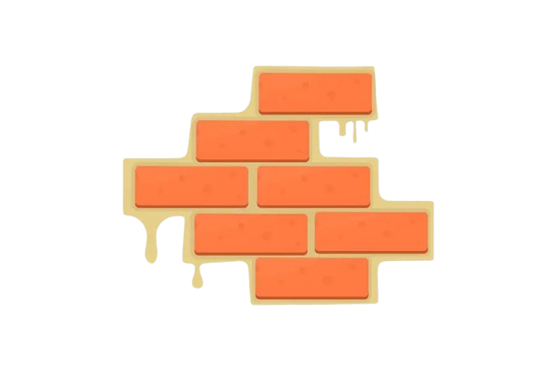

PROJETO MÃOS NA MASSA
"Construindo um Brasil mais inclusivo, tijolo por tijolo"
O Mãos na Massa tem como missão promovera dignidade e a inclusão social através da construção e adaptação de moradias e espaços comunitários para pessoas com deficiência ou em situação de vulnerabilidade. A organização mobiliza jovens voluntários para conscientizar e preparar futuras gerações sobre os desafios da acessibilidade no Brasil
A visão da ONG é ser uma referência nacional em acessibilidade, reconhecida por transformar a realidade de pessoas vulneráveis, criando um Brasil mais justo
Guiada por valores como inclusão, dignidade, empatia, solidariedade, sustentabilidade e resiliência, a Mãos na Massa busca impacto social positivo através de parcerias estratégicas